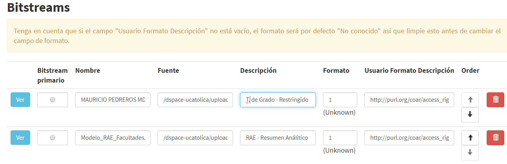

5.22. File Location (Ubicación del archivo) (MA)¶
oaire:file
5.22.1. Definición y alcance del campo¶
Hace referencia a la ubicación de un archivo que está asociado al recurso. Repita la propiedad para cada archivo asociado.
5.22.2. Niveles de persistencia (M/MA/R/O)¶
Obligatorio si es aplicable (MA)
5.22.3. Niveles de ocurrencia (R / NR)¶
Repetible (R): 0-n veces
Nota: Repita este campo utilizando los distintos atributos de fuente según se considere.
5.22.4. Esquema de metadatos¶
oaire:file
5.22.5. Traducción al español¶
Ubicación del archivo
5.22.6. Forma de Descripción Normalizada (RDA / RCAA2)¶
RDA (Recursos: descripción y acceso): Revise la forma adecuada para ingresar la información de la fuente con su debida puntuación:
- Ubicación del archivo: Coloque el tipo de objeto que representa el archivo. Ej: Full Text - Texto completo
- Especifíque el formato. Ej: HTML
5.22.7. Propiedades, atributos y especificadores de campo¶
5.22.7.1. Propiedad de Archivo (file) (MA, 0-n):¶
Utilice el URI HTTP del archivo como valor.
- Atributo Nivel de acceso (accessRightsURI ) (R, 1): Use los términos del vocabulario controlado Derecho de Acceso COAR:
| conceptURI | Etiqueta | Notas |
|---|---|---|
| http://purl.org/coar/access_right/c_abf2 | Acceso abierto | Acceso libre e irrestricto al documento para cualquier usuario (persona/máquina) |
| http://purl.org/coar/access_right/c_f1cf | Acceso embargado | Acceso libre e irrestricto al documento para cualquier usuario (persona/máquina) después de una fecha establecida. |
| http://purl.org/coar/access_right/c_16ec | Acceso restringido | Acceso libre solo para una comunidad específica de usuarios. |
| http://purl.org/coar/access_right/c_14cb | Acceso solo a metadatos | Acceso restringido al documento en contenido completo, sólo acceso referencial. Este enlace debe apuntar al registro de metadatos ó a un archivo cuyo contenido explique que no hay acceso al contenido completo (Ni siquiera en forma digital). |
- Atributo Tipo de Formato (mimeType) (R, 1): Especifique el formato de archivo. Se recomienda seleccionarlo del tipo de medio MIME que está registrado en IANA. Revise lista completa en: http://www.iana.org/assignments/media-types
- Atributo Tipo de Contenido (objectType) (R,1): Especifique el tipo de contenido que representa el archivo. Selecciónelo de la siguiente lista controlada:
| Tipo de objeto | Object Type |
|---|---|
| Texto completo | Fulltext |
| Conjunto de datos | Dataset |
| Software | Software |
| Otro | Other |
5.22.8. Relaciones con otros campos¶
El campo openaire.file tiene relación con el campo dc.relation.bitstream cuando este es utilizado. Así mismo DSPACE almacena la información de los archivos adjuntos al recurso de información (ítem) en loca campos bundle.original
5.22.9. Restricciones¶
No aplica
5.22.10. Ejemplos y ayudas¶
5.22.10.1. Ayudas¶
- Ej: oaire.file.openaccess: https://revistas.uptc.edu.co/index.php/rastrosyrostros/article/view/9146/7630
- Ej: oaire.file.embargoedaccess: http://repositorio.MinCiencias.gov.co/bitstream/handle/11146/21811/Pedroza%202%20Desinfestacion%20por%20fotolisis.pdf?sequence=1&isAllowed=n
- Ej: oaire.file.restrictedaccess: https://repositorio.escuelaing.edu.co/bitstream/001/539/26/Autorizaci%c3%b3n.pdf
- Ej: oaire.file.metadataonlyaccess: https://repositorio.konradlorenz.edu.co/bitstream/001/647/1/nueva-plantilla-ova-136.jpg
{kind=link}
5.22.10.2. Ejemplo en XML (Interoperabilidad OAI-PMH)¶
Esquema oai_dc
1 | <dc:relation>https://revistas.uptc.edu.co/index.php/rastrosyrostros/article/view/9146/7630</dc:relation>
|
Esquema datacite/oaire/openaire
1 2 | <oaire:file accessRightsURI="http://purl.org/coar/access_right/c_abf2" mimeType="application/pdf" objectType="fulltext">http://link-to-the-fulltext.org</oaire:file>
<file accessRightsURI="http://purl.org/coar/access_right/c_abf2" mimeType="application/pdf" objectType="fulltext">http://europepmc.org/articles/PMC5574022?pdf=render</file>
|
Esquema xoai
Esquema dim
1 2 | <dim:field mdschema ="dc" element ="relation" qualifier ="bitstream">http://link-to-the-fulltext.org</dim:field>
<dim:field mdschema ="oaire" element ="file" qualifier ="openaccess">http://link-to-the-fulltext.org</dim:field>
|
5.22.11. Niveles de aplicación para productos de investigación de MinCiencias¶
Se aplica a todos los productos de MinCiencias.
5.22.12. Relaciones con otros modelos de metadatos¶
El campo Ubicación del archivo es utilizado por los siguientes esquemas de metadatos y puede intercambiarse su uso de manera indistinta mientras se conserven sus distintos niveles de atributos y especificadores de campo:
| Esquema de Metadatos | Campo Relacionado |
|---|---|
| marcxml | field:544 |
5.22.13. Niveles semánticos¶
No aplica
5.22.14. Recomendación de campos de aplicación en DSPACE¶
En DSPACE, los archivos adjuntos al ´tiem que poseen el contenido completo y/o otros recursos anexos se almacena de manera independiente a los metadatos del registro y posee metadatos independientes específicos. Se recomienda utilizar el campo de metadatos asociado a la descripción del formato en DSPACE para almacenar el nivel de acceso a los mismos (Vocabulario Controlado).
{kind=link}
5.22.15. Recomendaciones de migración de Modelos anteriores (BDCOL, SNAAC, LA REFERENCIA, OPENAIRE 2, OPENAIRE 3)¶
- Se recomienda específicamente crear el campo de oaire:file teniendo en cuenta las indicaciones de la propuesta.